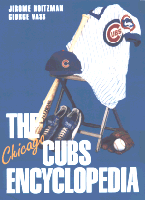

<body bgcolor="#FFFFFF" text="#000000" link="#0000FF" vlink="#CC0000" alink="#CC0000"><center><hr width="350" size="1" align="center" noshade>Everything you always wanted to know about a team often referred to as the "lovable losers"<hr width="350" size="1" align="center" noshade><p><a href="https://cdcshoppingcart.uchicago.edu/Cart/ChicagoBook.aspx?ISBN=9781566395472&&PRESS=temple" target="_top">Buy this book!</a> | <a href="https://cdcshoppingcart.uchicago.edu/Cart/Cart.aspx?PRESS=temple" target="_top">View Cart</a> | <a href="https://cdcshoppingcart.uchicago.edu/Cart/Cart.aspx?PRESS=temple" target="_top">Check Out</a></p><p></p></center><!--none//--><h1>The Chicago Cubs Encyclopedia</h1>
<h3>Jerome Holtzman and George Vass</h3>
<P>cloth 1-56639-547-X $59.50, Jun 97, <FONT COLOR=#990033>Out of Stock Unavailable</FONT>
<BR> 568 pp
9x12
470&nbsp;halftones 16&nbsp;color&nbsp;illustrations
</P><BLOCKQUOTE><I>"Jerome Holtzman knows baseball in general and the Chicago Cubs in particular as well, or better, than anybody who ever sat behind a typewriter in a ballpark. Even more so than most blue-blooded Cubs fans, Holtzman has lived, breathed, and absorbed the calamitous times of the Cubs. The few triumphs and many disappointments leap from the pages as only Jerome can tell it. Unlike most Cubs teams, this book is an easy winner."</I>
<br>&#151<b>Hal McCoy</b><I></I></BLOCKQUOTE>
<p>For the last half century, since 1945 when they won their last pennant, the Chicago Cubs have often been characterized as "lovable losers." Even Dallas Green, when he took over the club following the 1981 season, was unaware of the Cubs' glorious history and launched a promotional campaign entitled "Building a New Tradition." It was an understandable mistake.
<p>The Cubs set a record for consecutive second division finishes, 20. Still, all that was needed was one or two championship teams, certainly not a new tradition. The Cubs have won 16 pennants, set the one-season major league record for victories, 116 in 1906, and are the only charter member of the National League to play in the same city without interruption, 121 years.
<p>They were baseball's first dynasty&#151six pennants in the National League's first 11 seasons. Twice they won three consecutive pennants and four in a five-year sequence. A galaxy of hall-of-famers have paraded across the Chicago scene: Adrian Constantine Anson, Frank Chance, "Three Finger" Mordecai Brown, Gabby Hartnett, Hack Wilson, and more recently, Ernie Banks, Billy Williams, Ron Santo, Ferguson Jenkins, and Ryne Sandberg, just to name a few.
<p><i>The Chicago Cubs Encyclopedia </i>presents the touching history of the team that has been without a pennant longer than anyone in the major leagues. It includes:
<ul><li><p>over 500 illustrations, including a 16-page color section<br>
<li><p>complete statistics through the 1996 season on hitting streaks and ERA's, box scores, trades, and an all-time roster of managers, players, and position leaders<br>
<li><p>season-by-season descriptions<br>
<li><p>game highlights and great moments<br>
<li><p>over 100 player profiles from Adrian Constantine Anson to Ryne Sandberg<br>
<li><p>the managerial strategies, the personalities, honors, and the milestones<br>
<li><p>an immense treasure trove of little-known facts and surprising anecdotes</ul>
<BR>&nbsp;<h2>Contents</h2><P>
<p>Introduction
<br>1. Down Through the Seasons
<br>2. Player Profiles
<br>3. All the Team's Men
<br>4. The Skippers
<br>5. The Front Office
<br>6. The Ballparks
<br>7. The Hall of Famers
<br>8. The Postseason
<br>9. It's Fun, Not War
<br>10. Trades, Acquisitions, and Sales
<br>11. Milestones, Honors, and Other Facts
<br>Sources and Acknowledgments
<br>About the Authors
</P><BR>&nbsp;<H2>About the Author(s)</H2>
<table><tr><td valign="top"><img src="/tempress/authors/1225_au1.gif" height="90" width="75"></td><td width="100%" valign="middle"><p><B>Jerome Holtzman</B> is a baseball columnist for the <i>Chicago Tribune.</i> He is a member of the sportswriters wing of The Baseball Hall of Fame in Cooperstown.</P></td></tr></table><P><B>George Vass </B>is a freelance journalist. He was a writer for the <i>Chicago Sun Times </i>and <i>Chicago Daily News </i>and is the author of several sports books.</P>
<BR><H2>Subject Categories</H2>
<p><A HREF="/tempress/sports.html" TARGET="_top">Sports</a>
<BR><A HREF="/tempress/general.html" TARGET="_top">General Interest</a>
</p>
<BR><h2 class="inpageheading">In the series</H2>
<P><I><a href="http://www.temple.edu/tempress/encyclo.html" onMouseOver="window.status='Click for other books in this series!'; return true;" onMouseOut="window.status=''; return true;" target="_top">Baseball Encyclopedias of North America</a></i>, edited by Rich Westcott.
</p><p>The purpose of <i>Baseball Encyclopedias of North America</I>, edited by Rich Westcott, is to examine each of the clubs in big league baseball in an encyclopedic format. That is, to provide baseball fans a place to go to find information on a particular team organized in such a fashion that is available nowhere else. The series editor aims to concentrate on the 16 original teams of both leagues and publish each book as he is able to find the right person to do it. The books will all be unique because of their emphasis on three major components: 1) short, straight forward prose accounts of all aspects of the team including seasons, players, stadiums and front office people, 2) listings and statistics of all players of the team, and 3) heavy illustrations. These books can be read cover to cover or used as reference materials.</p>
<p align="center"><a href="https://cdcshoppingcart.uchicago.edu/Cart/ChicagoBook.aspx?ISBN=9781566395472&&PRESS=temple" target="_top">Buy this book!</a> | <a href="https://cdcshoppingcart.uchicago.edu/Cart/Cart.aspx?PRESS=temple" target="_top">View Cart</a> | <a href="https://cdcshoppingcart.uchicago.edu/Cart/Cart.aspx?PRESS=temple" target="_top">Check Out</a></p><p><font face="Arial" size="1"><a href="copyright.html" onMouseOver="window.status='Web Copyright Policy';return true;" onMouseOut="window.status=''" title="Web Copyright Policy">&copy;</a> 2015 <a href="http://www.temple.edu" target="new" onMouseOver="window.status='Link to Temple University home page';return true;" onMouseOut="window.status=''" title="Link to Temple University home page">Temple University</a>. All Rights Reserved. http://www.temple.edu/tempress/titles/1225_reg.html</font></p>